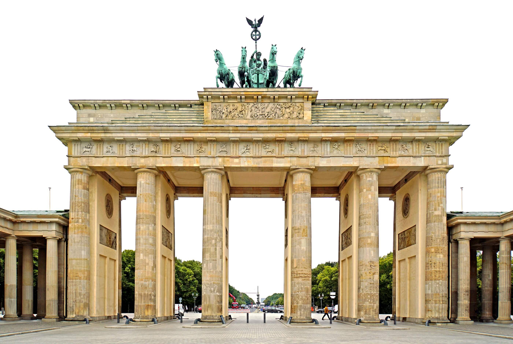
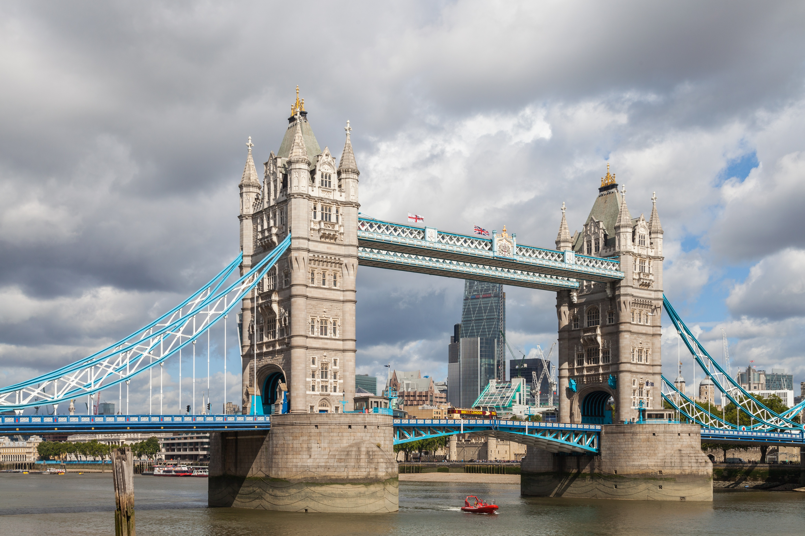
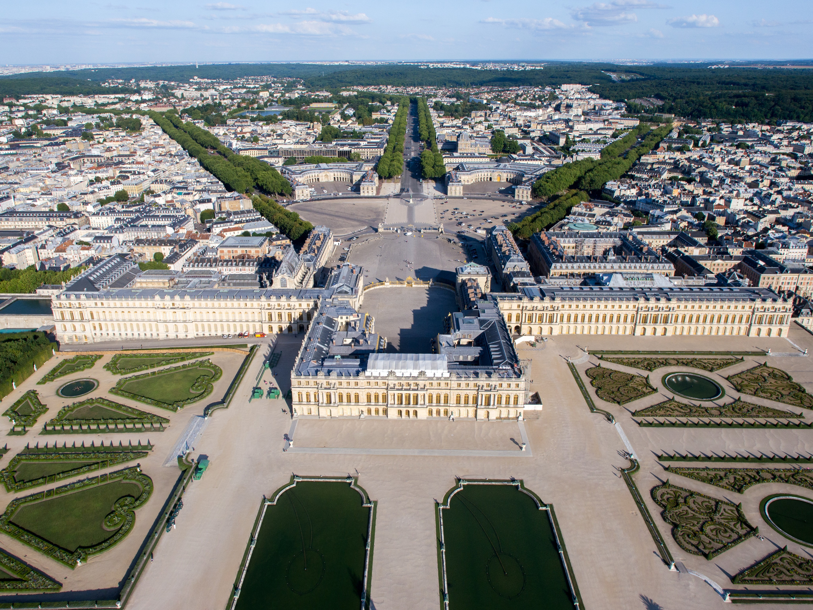
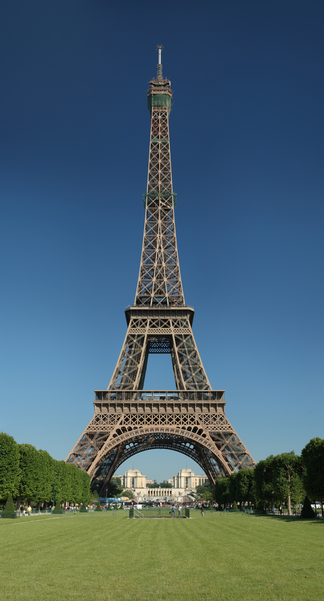
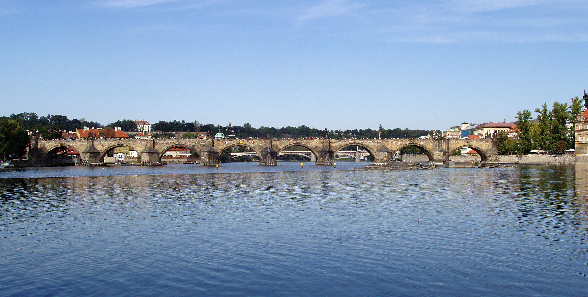
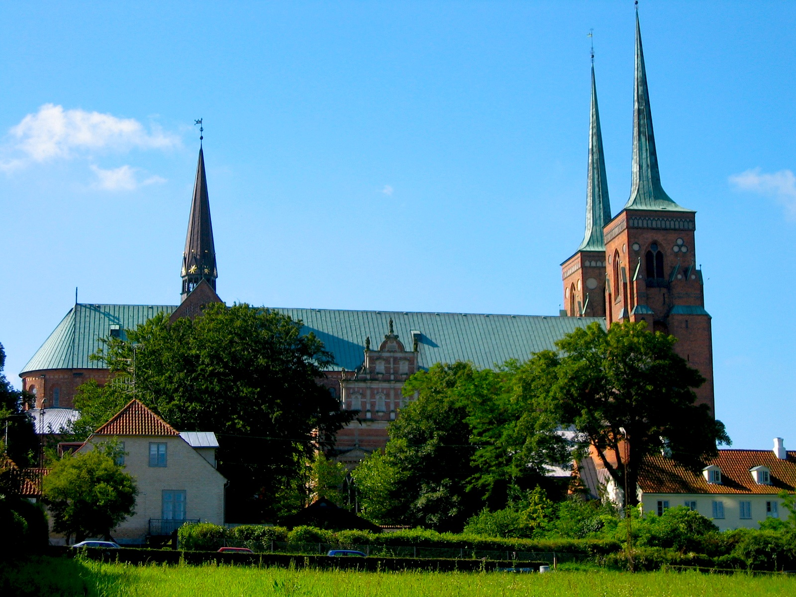
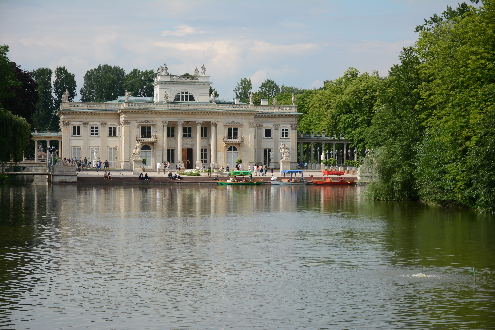
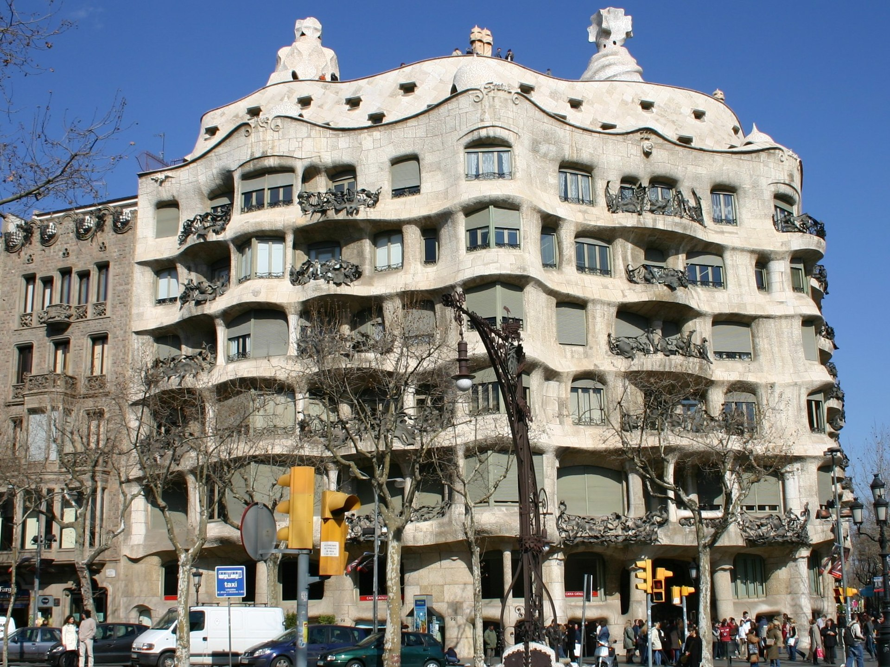

Budowę rozpoczęto w 447 roku p.n.e., najprawdopodobniej na podstawie planów Iktinosa i Kallikratesa. Rzeźby miał tworzyć sam Fidiasz. Świątynia uważana jest za najlepszy przykład budowli w porządku doryckim, choć znajdują się tu również elementy porządku jońskiego.Niszczenie budowli rozpoczęło się w V wieku, gdy po usunięciu posągu Ateny zmienioną ją na kościół chrześcijański.
Dziesięć wieków później działał tu już meczet, który następnie Turcy przerobili na skład prochu. Ten wybuchł w 1687 roku, powodując ogromne zniszczenia. W XIX wieku ocalałe rzeźby trafiły do muzeów w Londynie, Paryżu i Kopenhadze.
Brama Brandenburska, Berlin, Niemcy

Brama Brandenburska
Budowla powstała pod koniec XVII wieku została zaprojektowana przez pochodzącego z Kamiennej Góry niemieckiego architekta, Carla Gottharda Langhansa. Na górze znajduje się kwadryga, rzymski dwukołowy wóz zaprzężony w cztery koniec. Powozi nim Wiktoria. Rzeźby na początku XIX wieku Napoleon zabrał do Paryża. Po kilkunastu latach wróciły jednak do Berlina za sprawą gen. Ernsta von Pfuela, który zajął Paryż.
Od zbudowania Muru berlińskiego w 1961 roku aż do jego upadku dostęp do Bramy mieli tylko nieliczni, ponieważ znajdowała się na terenie obszaru granicznego. Nie można było zbliżyć się do niej z żadnej strony.
Tower Bridge, Londyn, Wielka Brytania

Tower Bridge
Jeden najbardziej znanych obiektów w mieście powstał w 1894 roku. Konstrukcja mostu umożliwia przepływanie statkom oceanicznym. W razie potrzeby do góry podnoszone są dwa skrzydła mostu, każde o wadze ok. 1200 ton. Jego dwie wieże połączone są dwoma kładkami dla pieszych, zawieszonymi 34 metrów na jednią i 44 metrów nad powierzchnią wody. Oryginalny mechanizm podnoszący most nie jest używany, obecnie stosuje się jego elektryczny zamiennik.
Pierwotnie most był beżowy. Na niebiesko, biało i czerwono przemalowano go w 1977 roku, w 25. rocznicę koronacji królowej Elżbiety II.
Pałac wersalski, Wersal k. Paryża, Francja

Pałac wersalski
Pałac zaprojektowali w XVII wieku królewscy architekci, Louis Le Vau i Jules Hardouin-Mansart. Początkowo w tym miejscu powstał jedynie zameczek myśliwski dla króla Ludwika XIII, który lubił wybierać się na polowania w okolice Wersalu i potrzebował lepszych warunków na nocleg niż przydrożne gospody. Z czasem królowi tak spodobała się okolica, że kazał rozbudować zameczek. Prace zakończono w 1634 roku.
Kolejni władcy przebudowywali pałac według swoich potrzeb i gustów aż do wybuchu rewolucji francuskiej, która zakończyła lata świetności monarchii. Budynek zaczął niszczeć, przed ruiną uratował go dopiero Napoleon. Dzisiaj 120 z 700 pomieszczeń udostępnionych jest zwiedzającym.
Wieża Eiffla, Paryż, Francja

Wieża Eiffla
Trwająca dwa lata budowa najbardziej znanego budynku w Paryżu rozpoczęła się w 1887 roku. W chwili powstania była najwyższą wieżą na świecie. Autorami projektu są Gustave Eiffel, Maurice Koechlin, Émile Nouguier. Wieża powstała z okazji paryskiej wystawy światowej w 1889 roku, w setną rocznice rewolucji francuskiej.
Według planów po 20 latach wieżą miała zostać rozebrana, ale Gustave Eiffel nie chciał do tego dopuścić. Otworzył więc otworzył na wieży laboratorium aerodynamiczne i meteorologiczne. Na początku I wojny światowej wieża zastąpiła gołębie pocztowe w komunikacji Paryża z posterunkami wzdłuż niemieckiej granicy.
Most Karola, Praga, Czechy

Most Karola
Najstarszy tak duży kamienny most świata, który przetrwał do dzisiaj. Budowę rozpoczęto w połowie XIV wieku, za panowania cesarza Karola IV. Dla wzmocnienia konstrukcji do zaprawy mostu na Wełtawie dodano białka jajek.
W trakcie badań archeologicznych w XXI wieku pojawiło się przypuszczenie, że budowniczym mostu nie był, jak do tej pory sądzono, Peter Parler, ale praski mieszczanin Oto lub Otlin. Do tej pory nie udało się tego zweryfikować.
Katedra, Roskilde, Dania

Katedra
Pierwszy gotycki kościół w Skandynawii. Wiadomo, że jako pierwsza w tym miejscu istniała drewniana świątynia, ale nie zachowały się żadne ślady. W XI wieku postawiono tu murowaną świątynię, a następnie przebudowano w stylu francuskiego gotyki. Remont zakończył się w 1280 roku. Dwie wieże zachodnie dobudowano w XIV wieku, a charakterystyczne iglice w XVII wieku.
W katedrze znajdują się prochy 39 duńskich królowych i królów. Najstarsze prochy należą do zmarłego w 987 roku Haralda Sinozębego, ojca Swena Widłobrodego.
Pałac Na Wodzie, Warszawa, Polska

Pałac Na Wodzie
Przebudowę stuletniej wtedy łaźni na barokowy pałac dla króla Stanisława Augusta Poniatowskiego pod koniec XVIII wieku zaprojektowali Dominik Merlini i Jan Chrystian Kamsetzer. Zespół pałacowy znajduje się na sztucznej wyspie otoczonej przez staw. Prowadzą do niego dwa mosty.
Latem odbywały się tu słynne obiady czwartkowe organizowane przez króla Stanisława Augusta Poniatowskiego. W 1817 roku pałac kupił car Aleksander I. Cerkiew w zachodnim pawilonie pochodzi z połowy XIX wieku. Po upadku powstania warszawskiego Niemcy wywołali pożar, w którym najbardziej ucierpiały najstarsze części budowli – pokój kąpielowy z XVII wieku oraz Sala Salomona z malowidłami Marcella Bacciarellego.
Casa Milà, Barcelona, Hiszpania

Casa Milà
Dom powstał w 1906 roku na zlecenie pierwszego właściciela, Pere Mili. Antonio Gaudi zaprojektował go, nie używając prostej kreski. Wszystkie ściany zdają się falować niczym wzburzone morze. W budynku nie ma kątów prostych. Ze względu na kształt barcelończycy przezywają go La Pedrera, czyli Kamieniołom.
W budynku dopracowany jest każdy szczegół. Balkony zdobią kute, żelazne balustrady, przypominające pnące się rośliny. Główną fasadę zdobią gotowe do odlotu ptaki. Każdy sufit ma własną, gipsową płaskorzeźbę. Ściany i sufity zdobią mozaiki i malowidła. A kominy przypominają kształtem dym.
Pałac Schonbrunn, Wiedeń, Austria
Pałac Schonbrunn
Pałac projektu Johanna Bernharda Fischera von Erlacha powstał w XVII-XVIII wieku na zlecenie cesarza Leopolda I. Barokowy wystrój pochodzi z czasów panowania Marii Teresy. Elewacje pomalowano na żółto, ponieważ był to jej ulubiony kolor.
Zwiedzającym udostępniono 45 z 1441 komnat. Wnętrza w stylu rokoko zdobią sprowadzone z Czech kryształowe lustra i fajansowe piece. Pokój Milionowy uważany jest za jedno z najpiękniejszych na świecie wnętrz utrzymanych w stylu rokoko – ściany wybijane są drewnem różanym i zdobione miniaturami z Indii i Persji. Z kolei komnaty mieszkalne i gabinety cesarza Franciszka Józefa są skromne i proste.